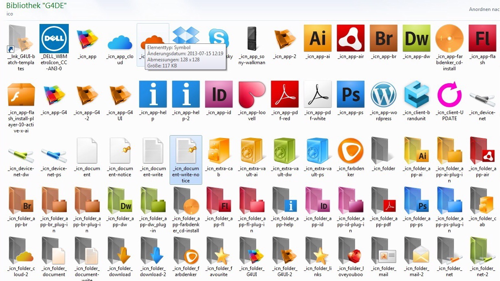

Collection of used G4 Icons and Brands
This project is maintained by ManuelGotzen

A free set of PNG icons in eleven sizes, black and white, from 16px to 4096px, with an accompanying list of colour codes. See The icons and colours at G4UI.org.
I want to grow this set, so if you have a specific request—or a comment—create an Issue on this repository. Icons will be added over time, and existing ones may be updated. Alternatively you can tweet me @Manuel Gotzen.
This is definitely something I’d like to include, but it’ll require me to take some time off work to complete. Hopefully that will happen sometime this summer. Watch this space!
P.S. If you have experience with best-practice optimisation and minification of SVG files please get in touch. I could do with honing my SVG workflow before embarking on a full refresh of this set.
The Simple Icons set and associated files are distributed by Dan Leech under the LICENCE. Company logos and icons may be subject to trademark and copyright conditions. Always check before deploying other companies’ branding on your own website.
© 2014, Manuel Gotzen
Distributed by Manuel Gotzen under the CC BY-ND-NC 1.0 licence. Company logos in icons are copyright of their respective owners.